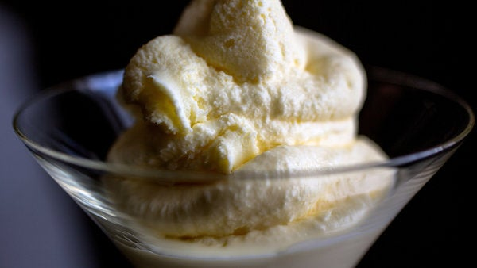

This silky, luscious, and very classic custard can be used as the based for any ice cream flavor you can dream up. These particular proportions of milk and cream to egg yolk will give you a thick but not sticky ice cream that feels decadent but not heavy. For something a little lighter, use more milk and less cream, as long as the dairy adds up to 3 cups. You can also cut down on egg yolks for a thinner base, but don't go below three.
Then flavor it any way you like. See the chart here for more than 15 flavor ideas. Or invent your own!
Step 1
In a small pot, simmer heavy cream, milk, sugar, and salt until sugar completely dissolves, about 5 minutes. Remove pot from heat. In a separate bowl, whisk yolks. Whisking constantly, slowly whisk about a third of the hot cream into the yolks, then shisk the yolk mixture back into the pot with the cream. Return the pot to medium-low heat and gently cook until mixture is thick enough to coat the back of the spoon (about 170 degrees on an instant-read thermometer)
Step 2
Strain through a fine mesh sieve into a bowl. Cool mixture to room temperature. Cover and chill at least 4 hours or overnight. Churn in an ice cream machine according to manufacturer's instructions. Serve directly from the machine for soft serve, or store in freezer
Tip
This recipe for ice cream base may be churned on its own, but is meant to have flavors added. See the chart here for flavor options and directions for incorporating them into the base recipe.